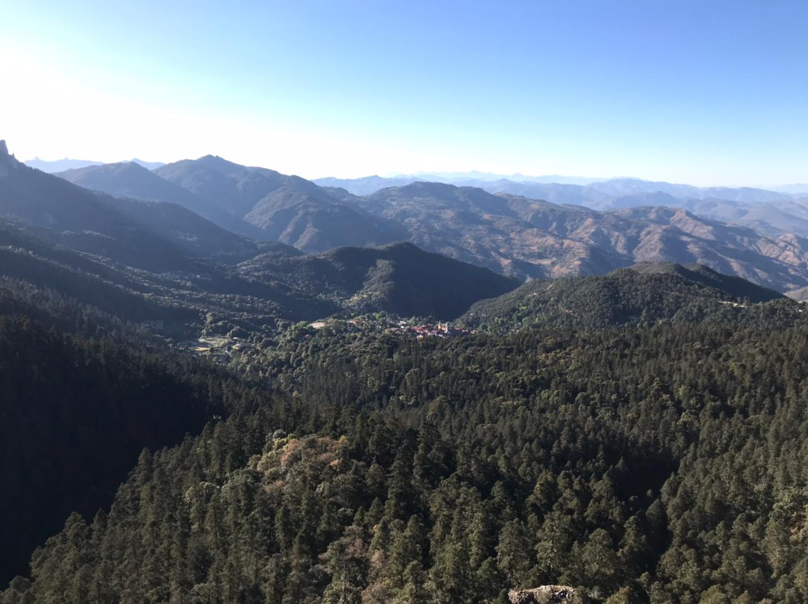
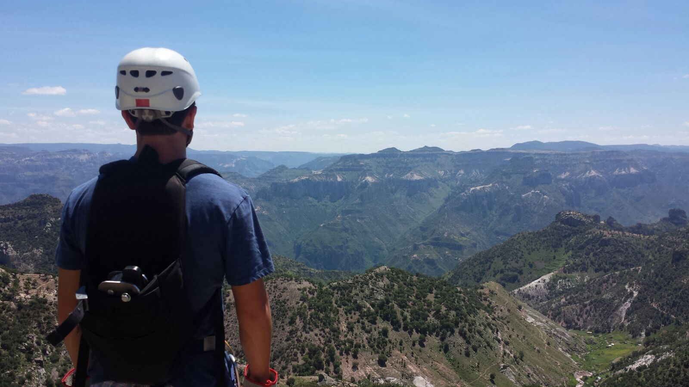
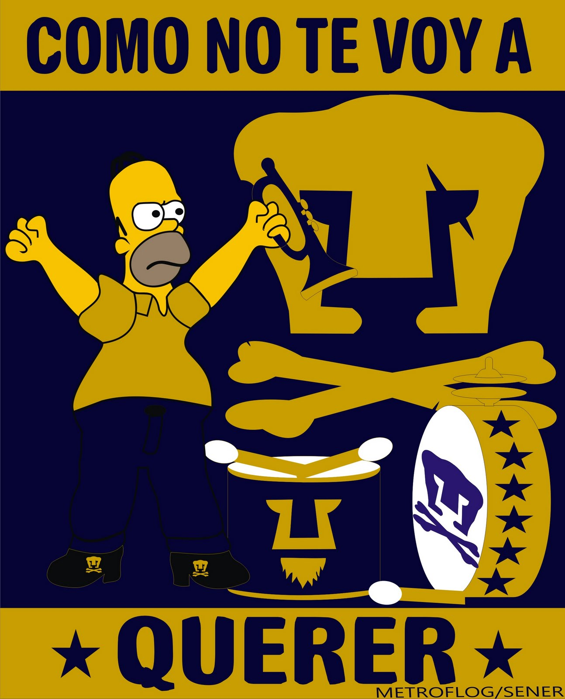

Mexico is an amazing country!
Great Mexican mathematicians
Jose Antonio de la Peña Mena, Diana Avella Alaminos, Gilberto Bruno Perez, Julio César Guevara Bravo, Javier Fernández García, Javier Bracho Carpizo, Laura Ortiz Bobadilla, Carlos Torres Alcaráz, Gabriela Campero Arena, Isabel Hubard Escalera, Sotero Prieto Rodríguez, Mónica Alicia Clapp Jiménez, Carlos Prieto de Castro, José Adem Chahín, Jesús A. de Loera, Graciela Salicrup, Alberto Barajas Celis, Alfonso Nápoles Gándara, Jorge Urrutia Galicia, María de la Luz Jimena de Teresa de Oteyza, Vinicio Gómez Gutiérrez, Omar Antolín Camarena, Ricardo Gómez Aiza, Pablo de la Fuente Parres Quintero, Adrián González Casanova, Alma Sarí Hernández Torres, Max Neumann Coto, Jessie Diana Pontigo Herrera, Sergio Rajsbaum Gorodezky, José Antonio Seade Kuri, José Eduardo Simental Rodríguez, Natalia Jonard, Javier Páez Cárdenas.
And many more, of course.
Beautiful places in Mexico



